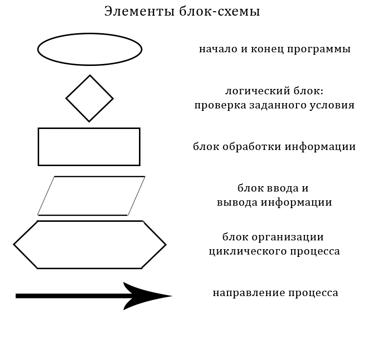

Что такое алгоритм?
Определение
Алгоритм — это последовательность действий, которая определяет процесс решения задачи за конечное время.
Свойства алгоритмов
- Дискретность: алгоритм состоит из отдельных шагов.
- Определённость: каждое действие алгоритма точно описано.
- Понятность: алгоритм должен быть понятен исполнителю.
- Результативность: алгоритм должен приводить к решению задачи.
- Массовость: алгоритм может быть применён к множеству однотипных задач.
Формы записи алгоритмов
Существуют различные формы записи алгоритмов, включая словесную и графическую.
| Форма записи | Описание | Пример |
|---|---|---|
| Словесная | Описание алгоритма в текстовом формате. |
|
| Графическая | Представление алгоритма в виде блок-схемы. |  |
Примеры алгоритмов
Словесный пример:
Алгоритм приготовления чая:
- Налить воду в чайник.
- Поставить чайник на плиту и довести до кипения.
- Положить чайный пакетик в чашку.
- Залить кипяток в чашку.
- Подождать 5 минут и вынуть пакетик.
Графический пример:
Алгоритм нахождения максимального числа из двух: